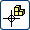
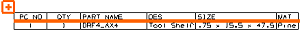
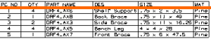
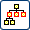

编辑零件明细表等级
-
打开装配导航器并展开所有节点。
-
右击零件明细表左上角的“加号”符号并选择编辑级别。
注意到当前包含在零件明细表中的组件，在制图视图以及装配导航器中高亮显示。
-
在编辑级别对话框条上，选择选择/取消选择子装配 。
-
在装配导航器中，选择 drf4_ax4 节点(不是前面的复选框)。
零件明细表上仅显示 drf4_ax4 组件。

-
在装配导航器中，选择 drf4_ax2 节点。
只有 drf4_ax2 子装配以及它的组件在装配导航器中高亮显示，且在零件明细表中逐条列出。
-
在编辑级别对话框条上，点击仅叶节点
 。
。现在，只有 drf4_ax2 下方的组件显示在零件明细表中，drf4_ax2 已被排除。

-
再次点击仅叶节点
以取消对它的选择。 -
点击仅顶级 。
零件明细表中仅显示 drf4_ax2 子装配，它的组件被排除。
-
在编辑级别对话框条上，点击确定
 。
。 -
关闭部件。